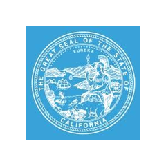

Analyst 1
California Secretary of State · Political Reform Division
- I write the Oracle SQL behind compliance reporting in CAL-ACCESS, an 80-table system, so the division can keep watch over campaign finance through clear dashboards and reports.
- When committees go quiet, I dig through their activity and filing history in SQL to find the ones that look inactive, then hand investigators a ready-to-use dataset that speeds up their reviews.
- I mapped the weekly reporting process in Visio and rebuilt it in Power Automate, taking report prep from 90 minutes to under 3 and giving the team back 75+ analyst hours a year.